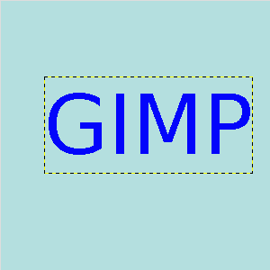

This tool allows you to apply moving, rotating, shearing, perspective and scaling corrections using handles placed on canvas.

Original image: a text layer
You can use 1 to 4 handles, and the effect depends on the number of handles. The tool acts on a selection, or, if there is no selection, on the whole layer. The active handle is bigger than the others. When the mouse pointer is on a handle, it goes with a small icon that represents the active action.
When you click and drag a handle, a transformation is applied, and the other handles stay at their place:
-
With 1 handle: click and drag the handle to move all pixels of the selection.
-
With 2 handles: when you click and drag a handle, you rotate around the other handle as a center, and you scale the selection, keeping the aspect ratio.
-
With 3 handles: when you click and drag a handle, you shear and scale the selection, aspect ratio is not kept.
-
With 4 handles: when you click and drag a handle, you change perspective and scale the selection, aspect ratio is not kept.
There are different possibilities to activate the tool:
-
From the main menu: → → .
-
By clicking the tool icon in the Toolbox.
-
By pressing the Shift+L keyboard shortcut.
- Shift
-
Press Shift and click on a handle to move it.
- Ctrl
-
Press Ctrl and click on a handle to remove it.
Normally, tool options are displayed in a window attached under the Toolbox as soon as you activate a tool. If they are not, you can access them from the main menu through → → which opens the option window of the selected tool. The available tool options can also be accessed by double clicking the corresponding tool icon in the Toolbox.
- Transform, Direction, Interpolation, Clipping, Show image preview, Guides
-
![[Note]](images/note.png)
Note These options are described in Transform tools common options.
- Image opacity
-
To set the opacity of the preview
- Handle mode
-
These options are describes in key modifiers section.